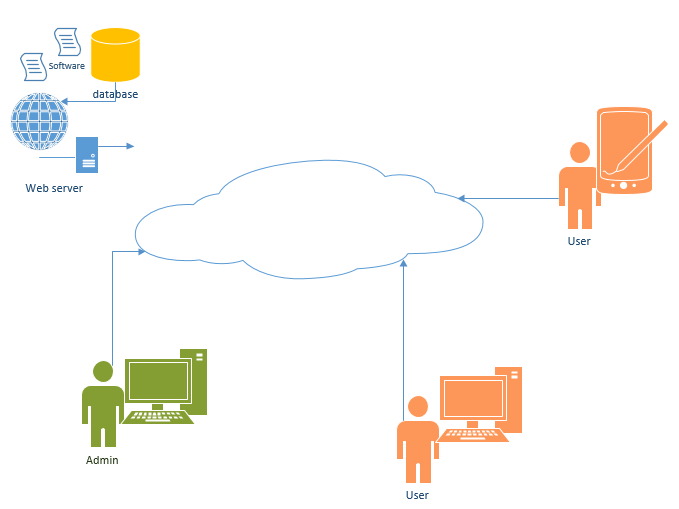
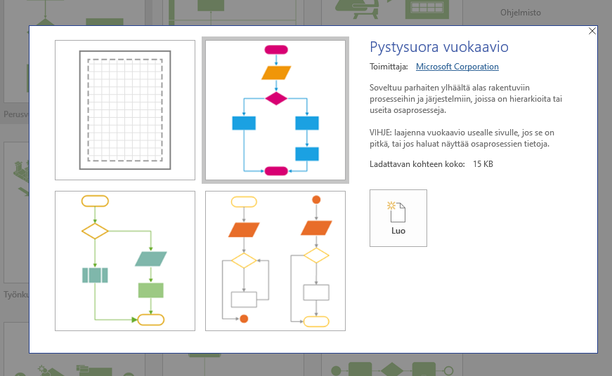
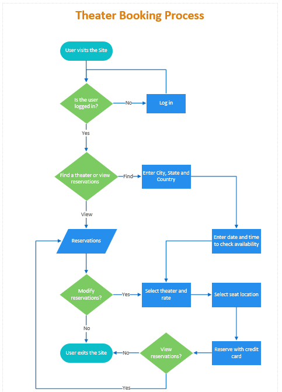
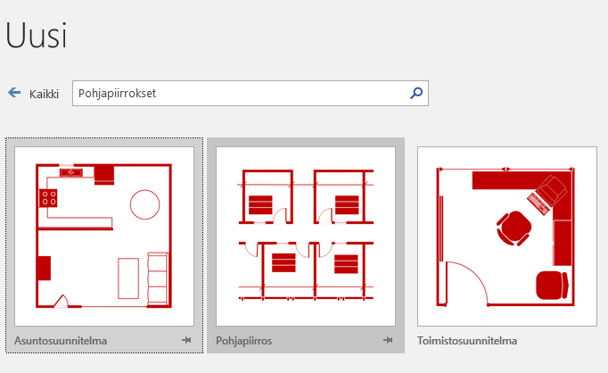
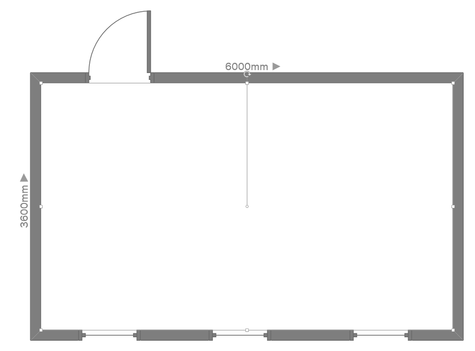

MS Visio
Yleistä
MS Visio on piirtoväline jota voidaan käyttää eri tyyppisiin suunnittelutehtäviin. Työväline toimii esimerkiksi tietokantojen, käyttötapausten tai käsitteiden mallintamisessa. Tietoverkon esittäminen tai tietovirran kuvaaminen onnistuu MS Visiolla hyvin.
Harjoitukset
Harjoitus 2
Laaditaan kuvaus Internetissä toimivasta palvelusta.
- Aloita uusi Detailed (tai Basic) Network Diagram.
- Mieti sopivista työkaluista mitkä sopisivat tarkoitukseemme. Lisää kuvaan Internet-pilvi, käyttäjä (admin), käyttäjä (user), mobiilikäyttäjä (user), palvelin jossa toimisi tietokanta sekä web-palvelu
Tallenna työ.

Harjoitus 3
Laadi vuokaavio jolla kuvaat tavallisen päiväsi. Miten päivät eroava riippuen onko arkipäivä vai viikonloppu?
- Valitse Flowcharts-tyyppinen kaavio
- Kuvaa Process -elementeillä tietty tila ja Decision -elementeillä vaihtoehto.


Tallenna työ.
Harjoitus 4
Ota käyttöön Visio ja Office Layout mallipohja.
- Piirrä puhtaaksi toimistohuoneen pohja ja sisusta siitä viihtyisä työtila kolmelle hengelle.
- Lisää myös tarvittavat laitteet huoneeseen. Huoneen koko on 3,6 metriä * 6 metriä.

